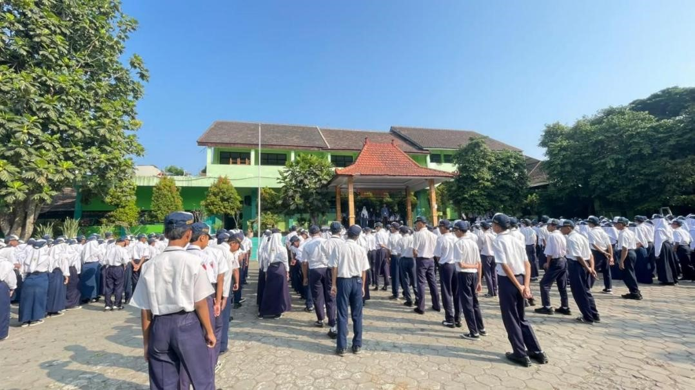
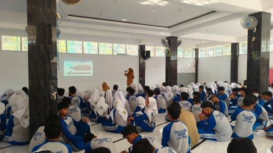

LK 3 Refleksi Praktik Mengajar Terbimbing & Mandiri
Dokumen Lengkap LK 3 (Refleksi)
Pratinjau langsung file PDF LK 3 yang telah diunggah ke Google Drive.
Produk rancangan pembelajaran yang disusun meliputi Rencana Pembelajaran Mendalam (RPM), bahan ajar, media pembelajaran, Lembar Kerja Peserta Didik (LKPD), dan instrumen penilaian. Perangkat tersebut dirancang untuk membantu peserta didik memahami konsep struktur data tree serta menerapkan berpikir komputasional dalam menyelesaikan permasalahan kontekstual.
Rancangan pembelajaran menggunakan model Problem Based Learning (PBL) dengan mengangkat permasalahan pembentukan kepanitiaan kegiatan Class Meeting. Permasalahan ini dipilih karena dekat dengan kehidupan peserta didik sehingga mereka dapat memahami konsep struktur data melalui situasi yang nyata. Peserta didik diarahkan untuk mengidentifikasi hubungan antaranggota kepanitiaan, menentukan posisi root, parent, child, dan leaf, serta menyusun diagram tree berdasarkan informasi yang tersedia.
Secara umum, rancangan pembelajaran telah menghubungkan tujuan pembelajaran, kegiatan belajar, penggunaan LKPD, dan asesmen. Peserta didik tidak hanya menerima penjelasan konsep, tetapi juga berdiskusi, menganalisis masalah, menyusun diagram, dan merefleksikan hasil belajar. Hal ini mendukung pembelajaran yang berpusat pada peserta didik serta pengembangan kemampuan berpikir kritis, kolaborasi, dan pemecahan masalah.
Aspek yang perlu diperhatikan dalam penyempurnaan rancangan adalah kesesuaian alokasi waktu dengan kompleksitas kegiatan, kejelasan petunjuk pengerjaan LKPD, serta pemberian bantuan bertahap bagi peserta didik yang mengalami kesulitan. Dengan demikian, rancangan pembelajaran dapat menjadi pedoman yang sistematis sekaligus fleksibel sesuai kebutuhan belajar peserta didik.
Materi pembelajaran yang disusun membahas konsep struktur data tree dan penerapan empat tahapan berpikir komputasional, yaitu dekomposisi, pengenalan pola, abstraksi, dan algoritma. Materi struktur data mencakup pengenalan hubungan hierarkis antarbagian serta istilah root sebagai simpul utama, parent sebagai simpul yang memiliki anak, child sebagai simpul turunan, dan leaf sebagai simpul yang tidak memiliki anak.
Materi disajikan melalui contoh yang dekat dengan kehidupan sehari-hari, seperti struktur folder pada komputer dan susunan organisasi. Pada LKPD, konsep tersebut diterapkan melalui studi kasus pembentukan kepanitiaan Class Meeting, yang terdiri atas seorang ketua panitia, tiga koordinator, dan anggota pada setiap bagian. Peserta didik diminta menganalisis susunan tersebut, mengidentifikasi komponen tree, serta menggambarkan hubungan antarbagian dalam bentuk diagram.
Penerapan materi ini memberikan kesempatan kepada peserta didik untuk menghubungkan pengetahuan konseptual dengan permasalahan nyata. Selain memahami struktur data, peserta didik dilatih menguraikan masalah menjadi bagian-bagian kecil, menemukan pola hubungan, memilih informasi yang relevan, dan menyusun langkah penyelesaian secara runtut.
Materi ini memiliki tingkat kontekstualisasi yang baik karena tidak hanya berfokus pada teori informatika, tetapi juga mengembangkan kemampuan berpikir logis dan sistematis. Meskipun demikian, istilah parent, child, dan leaf berpotensi menimbulkan kebingungan karena satu simpul dapat menjadi child bagi simpul di atasnya sekaligus parent bagi simpul di bawahnya. Oleh karena itu, materi perlu disertai contoh visual secara bertahap, latihan identifikasi, dan pertanyaan pemantik untuk memastikan pemahaman peserta didik.
Media pembelajaran yang digunakan meliputi slide presentasi, ilustrasi struktur data tree, serta LKPD berwarna yang dilengkapi dengan studi kasus, tabel analisis, pertanyaan identifikasi, ruang menggambar diagram, refleksi diri, dan rubrik penilaian.
Slide presentasi membantu guru menjelaskan konsep dan memberikan gambaran visual mengenai hubungan antarbagian dalam struktur tree. Sementara itu, LKPD menjadi media utama bagi peserta didik untuk menerapkan konsep melalui kegiatan kelompok. Desain LKPD yang menggunakan warna berbeda, ikon, dan pembagian bagian yang jelas dapat membantu peserta didik mengenali tahapan kegiatan serta memahami instruksi dengan lebih mudah.
Keunggulan media ini adalah menggabungkan informasi visual dengan aktivitas analisis dan praktik. Peserta didik tidak hanya membaca materi, tetapi juga mengisi tabel berpikir komputasional, menjawab pertanyaan mengenai root, parent, child, dan leaf, serta menggambar diagram tree. Dengan demikian, LKPD dapat mendukung pembelajaran aktif, kolaboratif, dan kontekstual.
Selain itu, LKPD memungkinkan guru mengamati proses berpikir peserta didik melalui jawaban dan diagram yang mereka hasilkan. Guru dapat mengidentifikasi bagian konsep yang telah dipahami maupun bagian yang masih memerlukan penjelasan tambahan.
Adapun hal yang perlu ditingkatkan adalah memastikan ukuran tulisan dan ruang jawaban memadai, memberikan contoh diagram sebelum pengerjaan, serta menjelaskan instruksi LKPD secara lisan. Guru juga perlu memastikan bahwa desain yang menarik tetap mendukung keterbacaan dan tidak mengalihkan perhatian dari tujuan pembelajaran. Secara keseluruhan, media yang digunakan berpotensi membantu peserta didik memahami materi abstrak melalui representasi visual dan aktivitas yang terarah.
Analisis video praktik mengajar mandiri dilakukan untuk mengevaluasi keterlaksanaan pembelajaran berdasarkan rancangan yang telah disusun. Aspek yang dapat dianalisis meliputi kegiatan pembukaan, penyampaian tujuan pembelajaran, pemberian apersepsi, penyajian materi, pengelolaan diskusi kelompok, pendampingan pengerjaan LKPD, presentasi hasil, asesmen, dan kegiatan penutup.
Pada kegiatan pembukaan, hal yang perlu diperhatikan adalah kemampuan guru membangun kesiapan belajar dan menghubungkan pengetahuan awal peserta didik dengan materi struktur data tree. Penggunaan contoh struktur folder komputer atau organisasi dapat menjadi pengantar untuk menjelaskan konsep hubungan hierarkis. Penyampaian tujuan pembelajaran yang jelas membantu peserta didik memahami kompetensi yang diharapkan.
Pada kegiatan inti, analisis difokuskan pada kejelasan penjelasan konsep, kesesuaian penerapan model PBL, dan kesempatan yang diberikan kepada peserta didik untuk aktif berdiskusi. Guru perlu memastikan bahwa peserta didik memperoleh kesempatan untuk mengidentifikasi masalah, mengisi LKPD, menentukan komponen tree, menggambar diagram, serta menjelaskan hasil analisisnya. Pendampingan guru juga perlu diperhatikan, terutama ketika peserta didik mengalami kesulitan membedakan parent, child, dan leaf.
Pada kegiatan penutup, hal yang perlu dianalisis adalah kemampuan guru membimbing peserta didik menyimpulkan pembelajaran, melakukan refleksi, dan mengecek ketercapaian tujuan. Penilaian terhadap video juga perlu memperhatikan pengelolaan waktu, komunikasi guru, keterlibatan peserta didik, dan kesesuaian antara kegiatan yang terlihat dengan RPM.
Melalui analisis video, guru dapat mengidentifikasi praktik yang sudah berjalan dengan baik dan bagian yang perlu diperbaiki. Hasil analisis dapat digunakan untuk meningkatkan kualitas penyampaian materi, pemerataan partisipasi peserta didik, pengelolaan kelas, dan efektivitas asesmen. Temuan akhir pada bagian ini perlu didasarkan pada rekaman video yang benar-benar dianalisis, misalnya melalui catatan waktu kejadian, contoh interaksi guru dan peserta didik, serta bukti kegiatan yang tampak dalam video.
Kegiatan nonmengajar merupakan kegiatan pendukung yang dilakukan selama pelaksanaan PPL untuk membantu kelancaran kegiatan pendidikan dan mendukung pengelolaan lingkungan sekolah. Berikut adalah rincian pelaksanaan kegiatan nonmengajar di sekolah mitra:
A Pembiasaan Go Green
Kegiatan pada foto menunjukkan pendampingan murid dalam pembiasaan Go Green. Kegiatan tersebut dilaksanakan setiap hari sebelum pulang sekolah pada pukul 14.30–14.40. Guru mendampingi murid menjaga kebersihan dan kerapian lingkungan sekolah melalui kegiatan merawat area sekitar.
Pendampingan tersebut membiasakan murid untuk peduli terhadap lingkungan dan bertanggung jawab terhadap ruang bersama. Guru juga memberikan contoh melalui keterlibatan langsung dalam kegiatan tersebut. Pembiasaan ini melatih murid untuk menjaga lingkungan secara rutin dan menerapkan sikap peduli dalam kehidupan sehari-hari.

Dokumentasi Pembiasaan Go Green
B Pengondisian Upacara Bendera / Apel Pagi
Kegiatan pada foto menunjukkan keterlibatan dalam mengondisikan murid saat upacara bendera atau apel pagi. Kegiatan tersebut dilaksanakan secara rutin setiap hari Senin pada pukul 07.00–08.00. Guru membantu murid mengikuti kegiatan dengan tertib dan menjaga barisan selama kegiatan berlangsung.
Guru juga mengingatkan murid untuk memperhatikan arahan dan mengikuti rangkaian kegiatan sesuai ketentuan. Pembiasaan tersebut melatih murid untuk disiplin dan mematuhi aturan dalam kegiatan sekolah. Murid juga belajar menjaga ketertiban dan bertanggung jawab terhadap perannya selama kegiatan berlangsung. Dalam pelaksanaannya, guru memberikan contoh melalui sikap disiplin dan kesiapan mengikuti kegiatan. Keterlibatan tersebut mendukung terciptanya budaya sekolah yang tertib melalui pembiasaan yang dilakukan secara rutin.

Dokumentasi Pengondisian Upacara
C Pendampingan Kegiatan Kokurikuler Jurnalistik
Kegiatan pada foto menunjukkan pendampingan murid dalam kegiatan kokurikuler melalui tugas berlatih menjadi jurnalis. Kegiatan tersebut menghasilkan teks berita berdasarkan hasil wawancara dengan warga. Murid menjalankan kegiatan secara bertahap, mulai dari menyusun teks wawancara hingga melakukan wawancara dengan narasumber. Setelah itu, murid mengolah informasi yang diperoleh menjadi sebuah teks berita.
Guru mendampingi setiap tahap agar murid dapat menjalankan tugas secara terarah dan berani berinteraksi dengan narasumber. Kegiatan ini melatih murid untuk berkomunikasi, menggali informasi, dan menyampaikan hasil wawancara secara sistematis. Pengalaman tersebut juga membantu murid mengembangkan kemampuan bekerja sama dan berpikir kritis.

Dokumentasi Kokurikuler Jurnalistik
Instrumen penilaian yang dirancang dalam pembelajaran struktur data tree meliputi penilaian terhadap pemahaman konsep, ketepatan jawaban, kerapian diagram, dan kerja sama kelompok. Aspek-aspek tersebut tercermin dalam rubrik penilaian yang terdapat pada LKPD.
Penilaian pemahaman konsep digunakan untuk mengetahui kemampuan peserta didik dalam menjelaskan struktur data tree dan mengenali komponen-komponennya. Ketepatan jawaban digunakan untuk menilai kemampuan peserta didik menentukan root, parent, child, dan leaf berdasarkan studi kasus. Penilaian kerapian diagram memperhatikan keteraturan susunan, kejelasan hubungan antarbagian, dan keterbacaan diagram yang dibuat. Sementara itu, aspek kerja sama kelompok digunakan untuk mengamati partisipasi anggota, pembagian tugas, dan kontribusi dalam menyelesaikan LKPD.
Instrumen tersebut memiliki kelebihan karena mencakup aspek pengetahuan, keterampilan, dan sikap dalam kegiatan pembelajaran. Penilaian tidak hanya berfokus pada hasil akhir berupa diagram, tetapi juga dapat memperhatikan proses kolaborasi dan penerapan konsep selama pengerjaan tugas. Dengan demikian, guru memperoleh gambaran yang lebih menyeluruh mengenai proses dan hasil belajar peserta didik.
Meskipun demikian, instrumen penilaian perlu dilengkapi dengan kriteria dan deskripsi skor yang jelas agar penilaian lebih objektif dan konsisten. Misalnya, skor tertinggi diberikan ketika peserta didik mampu mengidentifikasi komponen tree secara tepat, menggambar diagram dengan hubungan yang benar, dan menunjukkan kontribusi aktif dalam kelompok. Skor yang lebih rendah diberikan sesuai tingkat ketepatan dan kelengkapan hasil kerja.
Selain penilaian kelompok, asesmen individu perlu dilakukan untuk memastikan setiap peserta didik memahami materi secara mandiri. Asesmen tersebut dapat berupa pertanyaan singkat mengenai fungsi setiap komponen tree atau tugas mengidentifikasi komponen pada diagram baru. Hasil penilaian kemudian digunakan sebagai dasar pemberian umpan balik, pendampingan bagi peserta didik yang belum memahami konsep, dan kegiatan pengayaan bagi peserta didik yang telah mencapai tujuan pembelajaran.
Secara keseluruhan, instrumen penilaian yang dirancang telah memberikan dasar untuk menilai pemahaman konsep, keterampilan menyusun diagram, dan kerja sama peserta didik. Penyempurnaan rubrik, penambahan asesmen individu, serta penggunaan hasil penilaian untuk menentukan tindak lanjut akan membantu meningkatkan kualitas asesmen dan memastikan pembelajaran berorientasi pada perkembangan kompetensi setiap peserta didik.